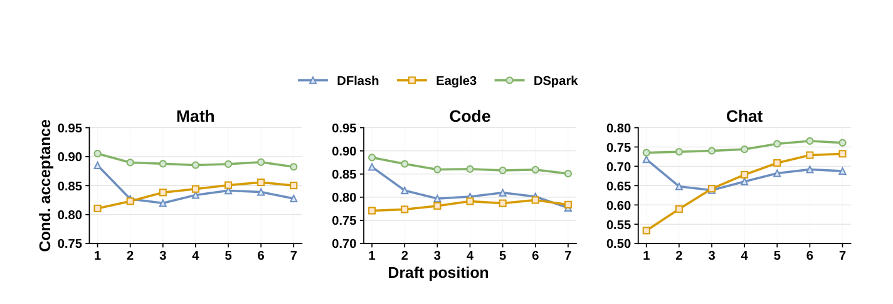
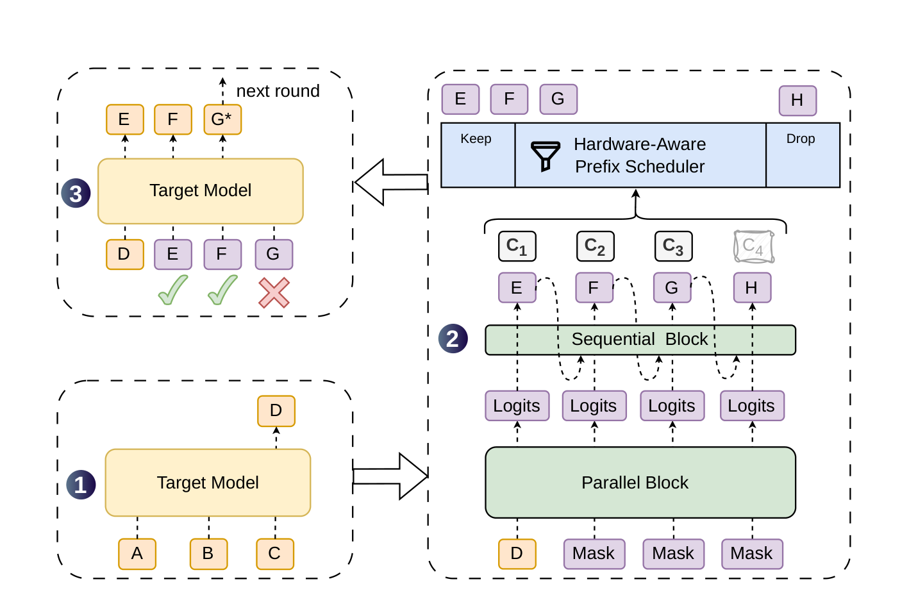
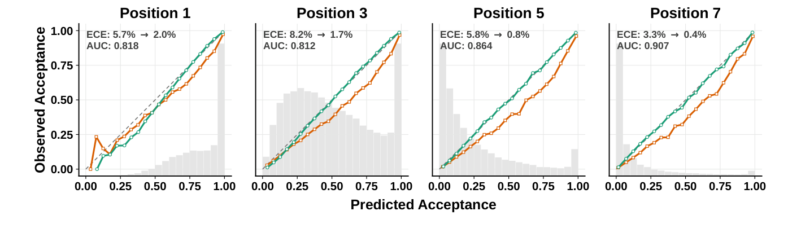
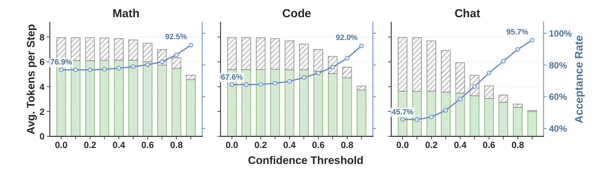
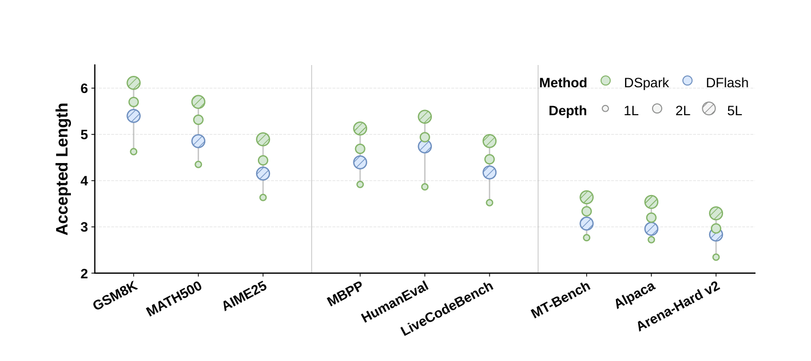
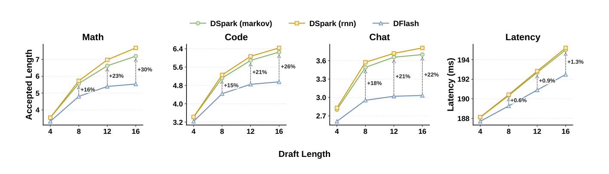
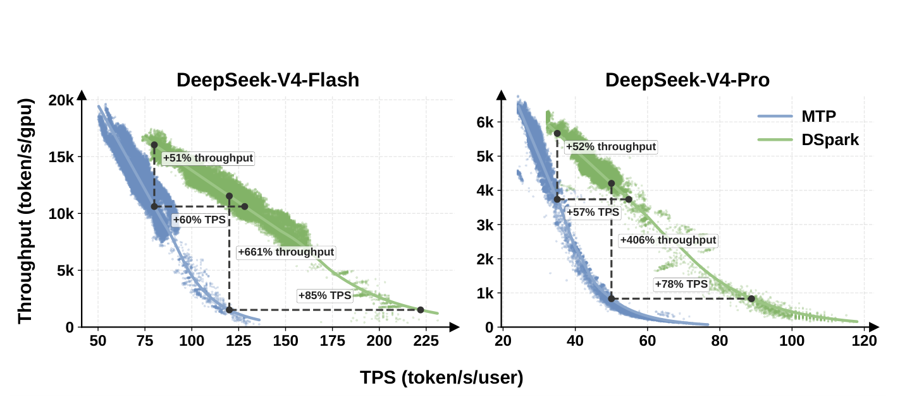
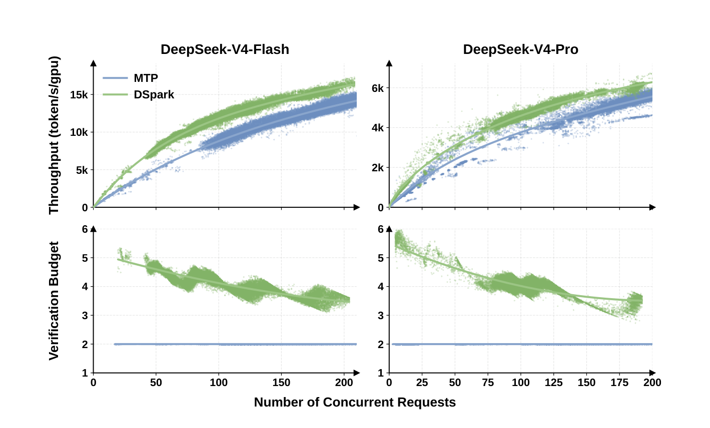

1.DeepSpec 是什么：一个算法驱动的推测解码训练全栈
DeepSpec 是 DeepSeek-AI 开源的推测解码（speculative decoding）草稿模型训练与评估仓库。它不是单一算法，而是一个"算法驱动"的框架——把三种风格迥异的草稿模型放在同一套数据、同一套训练循环、同一套 benchmark 下公平比较，并附带 DeepSeek 自家的新算法 DSpark 的完整实现与论文。
1.1 三种草稿模型：两条技术路线的完整枚举
仓库当前包含三种 draft model，它们代表了推测解码"草稿器"设计的两条主流路线：
| 算法 | 类型 | 起草方式 | 仓库来源 | 配置数 |
|---|---|---|---|---|
| DSpark | 半自回归 (semi-AR) | 并行 backbone + 轻量串行 head | DeepSeek 自家论文 | 4 (Qwen3-4B/8B/14B + Gemma4-12B) |
| DFlash | 并行 (parallel) | 单次前向产生整块 | 改编自 z-lab/dflash (MIT) | 4 |
| Eagle3 | 自回归 (AR) | 逐步采样，TTT 训练 | 改编自 SpecForge (Apache-2.0) | 4 |
1.2 仓库结构与文件 census
整个仓库 90 个文件，67 个 Python 文件，结构非常清晰：
DSpark 核心实现
markov_head.py 定义三种串行 head；common.py 负责 anchor 采样、noise embed、block attention mask；loss.py 组合 CE + TV/L1 + confidence 损失；{qwen3,gemma4}/modeling.py 承接模型族前向。
自回归对照组
Eagle3 作为 AR drafter baseline，没有 DSpark 的 block/markov 结构，用来隔离并行 backbone 与串行 head 的架构收益。
训练与评估管线
trainer 放训练循环和 ckpt 管理；data 读取 target cache 与预取；eval 复用 DSpark/Eagle3 evaluator 做 speculative decoding 指标。
实验入口
config/{dspark,dflash,eagle3} 覆盖 3 类算法 × 4 个 target；scripts 负责数据、训练、评估；eval_datasets 存放 GSM8K、MATH500、AIME、HumanEval、MBPP 等 benchmark。
一个值得注意的细节：eval.py 的 EVALUATORS 字典里只有 DSpark 和 Eagle3 两个键——DFlash 没有独立评估器。这是因为 DSpark 的并行 backbone 本身就是 DFlash（论文 §3.1："a parallel backbone (in our instantiation, DFlash)"），DSpark 评估器复用 DFlash 的 backbone 前向，只是在上面叠加了 Markov head 和 confidence head。这也解释了为什么 deepspec/eval/ 下没有 dflash/ 目录。
1.3 工作流：三阶段流水线
README 描述的三阶段流水线，每阶段的输出喂给下一阶段：
2.背景：为什么需要"半自回归"
2.1 推测解码的基本博弈
推测解码用一个轻量 draft model 提议 γ 个候选 token，target model 单次前向验证整块，接受最长的一致前缀并补一个 bonus token。每个解码周期的平均每 token 延迟为：
三个杠杆：降低 tdraft（起草更快）、提升 τacc（起草更准）、降低有效 tverify（验证更聪明）。三种 drafter 架构分别在这三个杠杆上做不同取舍。
2.2 两类 drafter 的根本 trade-off
| 自回归 (Eagle3) | 并行 (DFlash) | |
|---|---|---|
| 起草方式 | 逐步采样，每步依赖前一步 | 单次前向同时产出所有位置 |
| tdraft 随 block_size | O(γ) 线性增长 | ≈ O(1) 几乎无关 |
| 能用的网络深度 | 被迫浅 (1 层)，否则延迟太高 | 可用深网络 (5 层) |
| 位置 1 容量 | 低 (浅网络) | 高 (深网络) |
| 后段 (位置 2-7) 质量 | 高 (条件于已采样前缀) | 低 (各位置独立，多模态碰撞) |
2.3 DSpark 的设计目标：鱼和熊掌
论文 §4.3.1 用一张关键图（论文 Figure 2）揭示了反直觉现象：并行 drafter 的全局 accepted length 居然能超过自回归 drafter。原因在于位置 1 的容量差距——DFlash 在位置 1 的条件接受率（0.88 数学 / 0.72 聊天）远高于 Eagle3（0.81 / 0.53），而位置 1 被拒会让整块作废，所以位置 1 的杠杆最大。但 DFlash 在后段快速衰减，DSpark 的目标就是保留并行 backbone 的高位置 1 容量，同时用轻量串行 head 补上后段的依赖建模。
② Confidence-scheduled verification（§3.2）：confidence head 估计每个位置的存活概率，hardware-aware scheduler 按实时负载动态裁剪验证长度——把验证算力只投到期望回报最高的 token 上，解决高并发下的验证浪费。

3.DSpark 架构：半自回归的两段式生成
DSpark 把一次草稿生成拆成两段：并行 backbone 先一次性产出所有位置的 base logits，再由轻量串行 head 逐位置叠加一个"转移偏置"。两段加起来才形成最终的 block 内自回归分布。
3.1 一个解码周期的完整流程
给定 prompt（如 ABC），target model 执行一步生成锚点 token D，DSpark 以 D 为输入生成 EFGH 四个草稿 token 及对应置信度 c1-c4，调度器保留 EFG、丢弃低置信的 H，target 验证 EFG，接受 EF、拒绝 G 并补 G'：

下方动画展示其执行时序 —— 按"播放"或逐步查看：
动画① DSpark 解码周期：① target 生成锚点 D → ② 并行 backbone 同时产出 7 logits + 串行 head 逐个采样 EFGH + 调度器裁剪 H → ③ target 验证接受 EF、补 G' → next round。
3.2 并行段（Parallel stage）：DFlash backbone 的小改造
DSpark 的并行 backbone 直接复用 DFlash（论文 §3.1）。DFlash 的核心机制是KV injection：从 target model 的若干层抽取 hidden states，拼接后投影到 draft 的 hidden 空间，作为上下文注入 draft 每一层的 K/V：
K = [ hctx ; Kdraft ], V = [ hctx ; Vdraft ] (论文式 3)
从源码看，这个机制落得很具体：extract_context_feature 先把 target_layer_ids 指定的多层 hidden states 沿 hidden 维拼接；draft 模型里的 fc 再把 L × hidden_size 压回 hidden_size，并经过 hidden_norm 得到 h_ctx。进入每个 draft attention 层时，k_proj/v_proj 分别作用在 target_hidden_states 和 draft 自己的 hidden_states 上，然后执行 torch.cat([k_ctx, k_noise], dim=1) 与 torch.cat([v_ctx, v_noise], dim=1)。也就是说，DFlash 的“并行能力”不是来自更大的 mask token 输入本身，而是来自每个 draft query 都能在注意力里读到 target 的多层上下文 K/V。
下方动画展示 KV injection 的数据流 —— 按"播放"或逐步查看：
动画② DFlash KV injection：target 多层 hidden → 拼接投影成 h_ctx → 注入每层 draft attention 的 K/V → draft mask/anchor positions 并行读取上下文 → 一次前向产出整块 base logits。
DSpark 对 DFlash backbone 做了一处小修改：原版 DFlash 输入"锚点 + γ 个 mask"，只预测 mask 位置；DSpark 复用锚点所在的输入槽来预测锚点后的第一个新 token，于是 γ 个输入（1 锚点 + γ-1 mask）产出 γ 个 draft logits。这减少了起草计算量却维持相近质量。
下方动画把原版 DFlash 与 DSpark 的输入/输出位置对齐比较 —— 按"播放"或逐步查看：
动画③ 锚点位置复用：原版 DFlash 用锚点 D 作为条件，再用 γ 个 mask 预测 γ 个 token；DSpark 把 D 所在位置也纳入预测，1 个锚点 + γ-1 个 mask 就产出 γ 个 logits，同样前向得到更多有效输出。
3.3 串行段（Sequential stage）：因果 block 分布
串行段不重新定义一个全局归一化的能量模型，而是通过自回归因式分解诱导一个因果 block 分布：
其中 zk(π) 是并行 backbone 在位置 k 产出的 base logit，b(·) 是串行段附加的"前缀依赖转移偏置"。推理时从左到右采样。由于采样本质是串行的，这个 block 必须计算上足够轻（serial ≪ parallel），保证整体延迟仍由并行段主导。论文提供了两种实现——Markov head 和 RNN head（见 §4）。
下方动画对比两段生成的节奏差异 —— 按"播放"或逐步查看：
动画④ 两段式生成节奏对比：上行并行段一次前向同时产出所有 base logits（快但后段衰减）；下行串行段逐位置采样，每步的 markov bias 依赖前一步结果（flyPacket 可视化，慢一点但后段不衰减）。DSpark = 上行 + 下行叠加。
3.4 训练时的 attention mask：anchor-bounded packing
代码 deepspec/modeling/dspark/common.py 的 create_dspark_attention_mask 用 PyTorch flex_attention 实现了 block 级的稀疏 mask。核心逻辑（dspark_mask_mod）：
def dspark_mask_mod(b, h, q_idx, kv_idx):
q_block_id = q_idx // block_size
anchor_pos = anchor_positions[b, q_block_id]
is_context = kv_idx < seq_len
mask_context = is_context & (kv_idx < anchor_pos) # 只看锚点之前的 context
is_draft = kv_idx >= seq_len
kv_block_id = (kv_idx - seq_len) // block_size
mask_draft = is_draft & (q_block_id == kv_block_id) # block 内双向
is_valid_block = block_keep_mask[b, q_block_id]
return (mask_context | mask_draft) & is_valid_blockcreate_block_mask + 自定义 mask_mod 的价值——flex_attention 把它编译成稀疏 attention kernel。
4.三种串行 head：从一阶马尔可夫到 RNN
串行段的核心是 markov_head.py 里定义的三种 head，它们都继承自 VanillaMarkov，区别在于"转移偏置 b 能看到多少历史"。build_markov_head(config) 工厂函数按 markov_head_type 字段选择实例化哪个。
4.0 数学总览：并行 base logits + 串行前缀 bias
DSpark 的 draft 分布不是单独由 backbone 给出，而是把一次并行前向得到的 base logits 与一个轻量串行 head 产生的前缀相关偏置相加：
其中 z_k^{base} 来自并行 backbone 的 compute_logits(output_hidden)，一次性覆盖整个 block；b_k 来自 markov_head.apply_block_logits(...) 或推理时的 sample_block_tokens(...)。这就是半自回归的关键：重计算交给并行 backbone，块内依赖交给很小的串行 bias。
| Head | bk 依赖项 | 数学直觉 | 代码入口 |
|---|---|---|---|
| VanillaMarkov | xk-1 | 低秩 bigram 转移表 | compute_step_bias |
| GatedMarkovHead | xk-1, hk | 上下文门控的 bigram 转移 | compute_gate |
| RNNHead | sk-1, xk-1, hk | 块内前缀压缩状态 | _rnn_step |
prev_token_ids 是 [anchor_token, target_ids[:-1]]，即用真实前一个 token 做 teacher forcing；推理时每一步把刚采样出的 token 回填成下一步的 prev_token_ids。因此训练学到的是"给定前一个实际 token，如何修正当前位置分布"，推理恰好使用同一个条件结构，只是前一个 token 从真值换成了 draft 自己刚采出的样本。
P(x_k | x_0...x_{k-1}) ≈ P(x_k | x_{k-1})。在自然语言里，这对应 bigram 搭配偏好，比如 of → course 比 of → problem 更顺。DSpark 里的 Markov head 不是拿这个假设替代 backbone；backbone 已经通过 KV injection 和并行前向吸收了长上下文，Markov head 只负责给当前位置加一个局部转移修正项，专门修复并行生成最容易丢掉的块内相邻依赖。
| 概念 | 传统马尔可夫链 | DSpark Markov head |
|---|---|---|
| 状态 | 当前状态 sk-1 | 前一个实际 token x_{k-1} |
| 转移 | P(s_k | s_{k-1}) | b(x_{k-1}, ·)，对整个词表的 logit bias |
| 作用 | 单独决定下一状态分布 | 只修正 base_logits，不替代 backbone |
| 价值 | 用短记忆近似长历史 | 用极小串行成本补上相邻 token 搭配 |
4.1 VanillaMarkov：一阶马尔可夫 + 低秩分解
最简单的实例化：转移偏置只依赖前一个 token xk-1，即一阶转移 b(xk-1, ·)。理论上这是 V×V 的完整转移矩阵 B；实际用低秩分解 B ≈ W₁W₂ 逼近（默认 rank=256）：
W₁ 是 embedding 查表（V×r），W₂ 是 logit 投影（r×V）。代码里就是两行：
self.markov_w1 = nn.Embedding(self.vocab_size, self.markov_rank) # V×r 查表
self.markov_w2 = nn.Linear(self.markov_rank, self.vocab_size, bias=False) # r×V 投影
def compute_step_bias(self, token_ids, hidden_states):
del hidden_states # ← 注意: vanilla 不用 backbone hidden
return self.project_bias(self.get_prev_embeddings(token_ids))del hidden_states
VanillaMarkov 的转移偏置完全不用 backbone 的 hidden state——它是一个纯粹的 token-id 到 logit-bias 的查表 + 线性映射。这保证它的计算量极小（一次 embedding lookup + 一次矩阵乘），串行循环即使跑 16 步也几乎不增加延迟。代码用 del hidden_states 显式表达"这个 head 不需要 hidden"的契约。
of course 和 no problem，第 1 位可能倾向采 of 或 no，第 2 位却不知道第 1 位最终采了哪个，只能对所有可能前驱做边际化，于是可能把两个模式交叉拼成 of problem 或 no course。这就是 multi-modal collision：每个位置单独看都像是高概率 token，但组合后的路径不属于同一个一致模式。Markov head 的作用就是在第 1 位实际采出 of 后，把这个已实例化 token 写回下一步条件，给 course 加转移偏置、给 problem 减偏置；也就是把"边际化所有前驱"改成"条件于实际前驱"，从而缓解后段接受率快速衰减。
4.1.1 逐步拆解：一阶马尔可夫 + 低秩分解到底在做什么
这三层概念层层递进，下面逐一拆开。
动画⑤ Markov 低秩偏置：完整 V×V 转移表太大，低秩分解为 W₁ 查表 + W₂ 投影；当 prev token 是 "of" 时，bias 提升 "course"、压低 "problem"，再与 backbone base logits 相加得到最终采样分布。
① 一阶马尔可夫 = "只看前一个词"
位置 k 的偏置只取决于位置 k-1 那一个 token，不看 k-2、k-3 更早的历史。举例：前面采出 "of"，就查"of 后面通常接什么"给 "course" 加分；它不看更前面的词。这等价于一张转移表：给定前驱 token i，查表得到一个 V 维向量（对词表每个 token 的偏置值）。
② 完整转移表有多大：V×V 矩阵
词表 V ≈ 15 万（Qwen3）。完整的"一阶转移偏置"是一个 V × V 的矩阵 B：
③ 低秩分解 = 用两个小矩阵近似大矩阵
关键观察：大部分 (前驱 i, 后继 j) 组合根本不会出现（比如"的"后面不会接"量子"）。完整矩阵 B 大部分是 0 或噪声，真正的转移模式可以用更少的维度表达。低秩分解把 B 拆成两个小矩阵相乘：
一个类比：与其存一张 15万×15万 的"两词搭配表"（225 亿格），不如给每个词发一张 256 维的性格名片（W₁），再用一个共享的名片解读器（W₂）把名片翻译成"对所有词的偏好分数"。两张名片"对得上"的词就容易相邻。
| 完整矩阵 B | 低秩分解 W₁+W₂ (r=256) | |
|---|---|---|
| 形状 | V × V | (V × r) + (r × V) |
| 参数量 | 15万² = 225 亿 | 2 × 15万 × 256 ≈ 7680 万 |
| 压缩比 | 1× | 1/2930（减少 99.97%） |
| 单步计算 | 查表 O(1) 但存不下 | 查表 O(1) + 矩阵乘 O(r×V) ≈ 3840 万 FLOPs |
| 能否表达 | 精确 | 近似，但 256 维足以区分主要搭配模式 |
④ "of → course vs of → problem" 的数值示意
假设 W₁["of"] 是一个 256 维向量，W₂ 把它投影回 V 维。关键：投影后 "course" 的偏置是正的（+2.3，加分），"problem" 是负的（-1.8，减分），于是位置 2 更可能采出 "course"。上面的动画第 4-5 步把这个加法过程展开成了可视化 logits 条形图。
⑤ 为什么 r=256 够用
论文 §4.3.2 的实验结果把这个取舍说得很清楚：在 Qwen3-4B 上，固定 γ=7 时，DSpark 从 1 层加到 2 层收益最大，2 层 DSpark 已经超过 5 层 DFlash，说明轻量串行依赖比单纯堆深并行层更划算。固定 5 层、把 proposal length 扩到 {4,8,12,16} 时，DSpark 在所有长度都优于 DFlash，且越长优势越大：γ=7 时数学/代码/聊天分别提升 16% / 15% / 18%，γ=15 时扩大到 30% / 26% / 22%。RNN head 只在长 proposal 上比 Markov head 多一点边际收益，但实现和部署复杂度更高；同时 γ 从 4 增到 16 时，串行循环只给整轮延迟增加 0.2%~1.3%。所以 r=256 的一阶 Markov head 已经用很小代价吃到主要收益，足以作为默认选择。
| 实验维度 | 设置 | 结果 | 结论 |
|---|---|---|---|
| Drafter 深度 | γ=7，DSpark 1→5 层，对比 5 层 DFlash | 1→2 层边际收益最大；2 层 DSpark 已超过 5 层 DFlash | 局部自回归修正比单纯堆并行层更高效 |
| Proposal 长度 | 5 层，γ∈{4,8,12,16} | DSpark 全长度优于 DFlash；γ=7 提升 16%/15%/18%，γ=15 提升 30%/26%/22% | Markov head 抑制 suffix decay，长块越长越值 |
| RNN 对比 | Markov head vs RNN head | RNN 主要只在长 proposal 上有边际收益 | 默认用 Markov head 更利于实现与部署 |
| 延迟开销 | batch=128，γ 从 4 增到 16 | 整轮延迟仅增加 0.2%~1.3% | 串行采样循环不是主要瓶颈 |
4.2 GatedMarkovHead：用 backbone hidden 调制
Vanilla 的偏置对所有上下文相同（只看 token id）。Gated 版本引入一个门控，让 backbone 的 hidden state hk 调制 markov embedding：
class GatedMarkovHead(VanillaMarkov):
def __init__(self, *, vocab_size, markov_rank, hidden_size):
super().__init__(vocab_size=vocab_size, markov_rank=markov_rank)
self.gate_proj = nn.Linear(hidden_size + markov_rank, markov_rank)
def compute_step_bias(self, token_ids, hidden_states):
prev_embeddings = self.get_prev_embeddings(token_ids) # W1[x_{k-1}]
gate = self.compute_gate(token_ids, hidden_states) # sigmoid(W[ h_k ; W1[x_{k-1}] ])
return self.project_bias(gate * prev_embeddings) # W2 · (gate ⊙ W1[x_{k-1}])门控 = sigmoid(Wg·[hk ; W₁[xk-1]])，对 markov embedding 做逐元素门控。这让相同的前驱 token 在不同上下文下产生不同的偏置——比 vanilla 更具表达力，但多了一次 sigmoid 和 hidden 拼接。
4.3 RNNHead：记忆整个块内前缀
Markov head 是无记忆的——位置 k 看不到 k-1 之前的 token。RNN head 放松这个限制，用一个 GRU 式的循环状态 s 累积块内完整前缀历史：
sk = g ⊙ sk-1 + (1-g) ⊙ tanh(c), b(<,·) = W₂·tanh(o)
其中 [g; c; o] = joint_proj(z), s0 = 0 (论文式 6)
s_k 不是再存一串 token，而是把已经采过的块内前缀压缩成一个 r 维状态。每一步先把旧状态 s_{k-1}、前一个实际 token 的低秩 embedding W₁[x_{k-1}]、当前位置 backbone hidden h_k 拼起来，得到当前要不要更新记忆的依据。门 g 接近 1 时保留旧状态，接近 0 时用候选记忆 tanh(c) 覆盖更多；因此更新式 s_k = g⊙s_{k-1} + (1-g)⊙tanh(c) 本质上是在“沿用已有前缀模式”和“写入刚发生的新 token 信息”之间做逐维插值。最后 o 不直接当状态，而是生成当前位置的词表 bias，让 RNN head 用压缩后的前缀记忆修正 base logits。
代码把 gate/candidate/output 三个投影合并成一个 linear（joint_proj = nn.Linear(2*markov_rank + hidden_size, 3*markov_rank)），再 chunk 成三段——这是常见的 GRU 参数复用技巧。
def _rnn_step(self, state, prev_embeddings, hidden_states):
z = torch.cat([state, prev_embeddings, hidden_states], dim=-1)
proj = self.joint_proj(z)
gate_raw, candidate_raw, output_raw = proj.chunk(3, dim=-1)
gate = torch.sigmoid(gate_raw)
candidate = torch.tanh(candidate_raw)
new_state = gate * state + (1.0 - gate) * candidate
bias = self.project_bias(torch.tanh(output_raw))
return new_state, bias4.4 三种 head 的对比与默认选择
| Head | 可见历史 | 用 backbone hidden | 参数 | 默认 |
|---|---|---|---|---|
| VanillaMarkov | 仅 xk-1 | 否 (del hidden) | W₁(V×r) + W₂(r×V) | 是 (论文默认) |
| GatedMarkovHead | xk-1 + hk 门控 | 是 | + Wg((d+r)×r) | 否 |
| RNNHead | 整个块内前缀 (经 state) | 是 | + Wjoint((2r+d)×3r) | 否 (长 block 时略优) |
4.5 采样循环：sample_block_tokens 的自回归展开
三种 head 都实现了 sample_block_tokens，它把并行 backbone 产出的 base_logits 按位置自回归展开：每步用当前 prev_token 查 markov bias、叠加到 base_logits、采样、把采样结果作为下一步的 prev_token。以 VanillaMarkov 为例：
def sample_block_tokens(self, base_logits, *, first_prev_token_ids, hidden_states, temperature=0.0):
sampled_tokens, corrected_logits = [], []
prev_token_ids = first_prev_token_ids.long()
for step_idx in range(proposal_len):
step_hidden = None if hidden_states is None else hidden_states[:, step_idx, ...]
step_logits = self.apply_step_logits( # base + markov_bias
base_logits[:, step_idx, :], token_ids=prev_token_ids, hidden_states=step_hidden)
corrected_logits.append(step_logits.unsqueeze(1))
next_token_ids = sample_tokens(step_logits.unsqueeze(1), temperature=temperature).squeeze(1)
sampled_tokens.append(next_token_ids)
prev_token_ids = next_token_ids # ← 串行依赖在这传递
return torch.stack(sampled_tokens, dim=1), torch.cat(corrected_logits, dim=1)4.5.1 分布学习目标：为什么 bias 要贴近 target 全分布
串行 head 最终改变的是整个词表上的概率分布，而不是只改变 ground-truth token 的分数。因此训练里除了交叉熵，还用 target logits 做全分布匹配。设 draft 和 target 的单步分布分别为 q 与 p，则推测解码的单步软接受率为：
所以最小化 L1/TV 距离等价于直接提高接受率。代码在 loss.py 里用 softmax(outputs.draft_logits) 与 softmax(aligned_target_logits) 计算 L1，同时用同一个公式得到 accept_rate_3d 作为 confidence head 的软标签。换句话说，Markov/RNN head 学的是"怎样让草稿分布更像 target 分布"，confidence head 学的是"这个相似度会带来多大接受概率"。
xk-1 这一个真实前驱，已经能消掉大量局部歧义；RNN 的全前缀状态当然更强，但在短 block（默认 block_size=7）里边际收益容易被额外状态管理成本吃掉。
4.6 生动速记:三种 head 的拟人化谱系
前面四节讲了实现细节,这里给一组拟人化别名与动机补遗,方便快速建立直觉。
三种 head 的差别,一句话:bias 能看到多少历史。
「只记得昨天的人」
每天的行为只取决于昨天——前天的事全忘光。选词时只问"上一个词是啥",查"性格名片"(W₁,256维)经"解读器"(W₂)翻成对每个候选词的偏好分。低秩分解把 225 亿格的完整搭配表压到 7680 万参数(1/2930),靠的是洞察:大部分词对根本不会相邻,真正的转移模式用 256 维就够表达。
可见历史:仅 xk-1 · 用 hidden:否
「会看场合的人」
vanilla 像个只会背搭配表的书呆子:看到"of"就机械给"course"加分,不管语境。Gated 像个会看场合的人:同样看到"of",先扫一眼当前语境(hidden h_k),用 sigmoid 门控决定"这次该信多少搭配表"。语境明确("because of")→门接近 0,让 backbone 说了算;语境模糊("___ of")→门接近 1,充分信任搭配表。门控 ⊙ 名片 = "按场合调节名片各维度的音量"。
可见历史:xk-1 + hk 门控 · 用 hidden:是
「带着日记本的人」
每走一步在日记本(state s)上记一笔,下一步翻看整本日记再决定 bias。日记本里:sk-1=昨天的日记(累积前缀)、W₁[xk-1]=今天刚发生的事、h_k=当前场合、门 g="日记该改写多少"(g 大保留旧记忆,g 小用新候选覆盖)。GRU 的妙处是可遗忘:门 g 让 state 选择性保留早期信息、丢弃噪声,比简单累加更鲁棒。
可见历史:整个块内前缀 · 用 hidden:是
谱系一览:记忆范围的递进
表达力递增,部署复杂度也递增 → DSpark 默认选最左档(一阶),用最小代价拿 90% 收益
5.Confidence Head 与 Hardware-Aware 调度
DSpark 的第二板斧解决的是系统级问题：大 block 草稿容易产出，但盲目验证整个 block 在高并发下会浪费 target 的 batch 容量。confidence head 估计每个位置的存活概率，调度器据此动态裁剪验证长度。
5.1 Confidence Head：预测前缀存活概率
confidence head 对每个草稿位置 k 输出一个标量 ĉk ∈ (0,1)，建模的是"在前驱都被接受的前提下，位置 k 也被 target 接受的条件概率"。架构极轻量——一个线性投影 + sigmoid：
注意输入特征：backbone hidden hk 拼接 Markov embedding W₁[xk-1]——即 confidence head 复用了 Markov head 的查表，共享前驱 token 的表征。代码 common.py 的 AcceptRatePredictor 就是 nn.Linear(input_dim, 1)，extract_context_feature 负责拼接多层 hidden。
5.2 监督信号：从 TV 距离推导解析接受率
confidence head 的监督标签不是 0/1 的接受/拒绝硬标签，而是从 draft 与 target 分布的总变差距离 (Total Variation)解析推导的软接受率：
5.3 Sequential Temperature Scaling (STS)：事后校准
原始 confidence estimate 通常过度自信（ECE 3%-8%）。但 hardware-aware scheduler 需要累积存活概率的绝对数值来估算期望接受长度，过度自信会让调度估算失真。STS 解决这个问题：
关键：温度缩放是保序变换——它修正预测概率的数值去匹配经验接受率，但不改变 token 间的相对排名。所以 confidence head 学到的判别能力（哪些 token 更可能被拒）被完整保留。校准后平均 ECE 降到 1%（论文 Figure 6）。

5.4 Hardware-Aware Prefix Scheduler：全局吞吐最大化
这是 DSpark 最有系统品味的部分。静态阈值（如"confidence < 0.5 就裁"）在单请求假设下有效，但在高并发生产系统里次优——验证一个低置信 token 的机会成本取决于当前负载：轻载时几乎免费，重载时占用本可服务其他请求的 batch 容量。
eval.py 只实现单请求的静态 --confidence-threshold 裁剪与 confidence 诊断；下面的 SPS 查表、全局 greedy scheduler、异步 ZOS 和变长 kernel 适配来自 DSpark 论文的生产系统描述，不是本仓库里可直接运行的调度器源码。
问题形式化
一批 N 个活跃请求，请求 i 的验证长度 ℓi ∈ {0,...,γ}。因为推测解码只接受连续前缀，位置 k 的存活概率 = 累积乘积 ρi,k = ∏j≤k ci,j。单次验证的 batch size（token 计）B = Σ(1+ℓi)，期望接受 token 数 A = Σ(1 + Σk≤ℓρi,k)。设 SPS(B) 为引擎在 batch size B 下的吞吐（steps/s，预 profile 一次存成查表），目标是最大化系统级 token 吞吐 Φ = A · SPS(B)。
贪心解 + 早停保证无损
动画⑥ 调度器贪心搜索：左表按 ρ 降序逐行 admit（B/A/Φ 数值滚动），右曲线 Φ=A·SPS(B) 爬升。Φ 到峰值后继续 admit 会下降——此时早停 break（黄色 branchArrow），返回 best 对应验证长度。早停保证无损性：截断决策只依赖已处理前缀。
这个早停在 Φ 单峰时给出全局最优；真实硬件 SPS 曲线是离散锯齿的，论文 §5.2 给了工程适配（见 §8）。
5.5 离线阈值扫描：confidence head 的诊断
论文 §4.3.3（论文 Figure 5）用静态阈值扫描验证 confidence head 的判别力：阈值从 0 升到 0.8，整体接受率稳步上升——因为低价值后缀被裁掉。聊天任务剪枝最显著（接受率 45.7% → 95.7%），数学/代码因本身可预测性高、剪枝较温和（76.9%→92.5%、67.6%→92.0%）。这正好对应 §7 主结果里"结构化任务接受长度天然更高"的领域效应。

6.训练：三项损失与离线 target cache
DSpark 的训练目标是三项加权和，全部由一个位置衰减权重加权。target model 全程冻结，draft 只更新 backbone + 串行 head + confidence head，embedding 和 LM head 共享自 target 且冻结。
6.1 三项损失：CE + TV + Confidence
默认权重: αce=0.1, αtv=0.9, αconf=1.0
| 损失 | 公式 | 监督什么 | 为什么需要 |
|---|---|---|---|
| Lce 交叉熵 | -Σ wk log p(x*k) (式 9) | draft 预测正确下一个 token | 基础监督，但只看 ground-truth token |
| Ltv 分布匹配 | Σ wk·½‖pdraft-ptarget‖1 (式 10) | draft 分布贴近 target 分布 | 直接最大化接受率（TV=接受率补数）。CE 只看正确 token，TV 看整个分布形状——即使 ground-trunk token 一样，分布偏了也会被拒 |
| Lconf 置信度 BCE | -Σ wk[α log ĉ + (1-α) log(1-ĉ)] (式 11) | confidence head 预测软接受率 α | 调度器需要精确的存活概率估计，必须端到端训练校准 |
6.2 位置衰减权重：wk = exp(-(k-1)/γ)
三项损失都按位置衰减权重 wk = exp(-(k-1)/γ) 加权（γ 是衰减常数，config 里 loss_decay_gamma=4.0）。越靠前的位置权重越大——因为前缀式验证下，位置 1 被拒会让整块作废，前段 token 对期望接受长度的贡献最大。这与 §2.3 "位置 1 杠杆最大"的分析一致。代码 loss.py 的 _build_loss_weight_mask 实现：
def _build_loss_weight_mask(*, eval_mask, block_size, device, loss_decay_gamma):
loss_weight_mask = eval_mask.to(torch.float32)
if loss_decay_gamma is not None and loss_decay_gamma > 0:
positions = torch.arange(block_size, device=device).view(1, 1, -1)
decay_weights = torch.exp(-positions.float() / float(loss_decay_gamma))
loss_weight_mask = loss_weight_mask * decay_weights
return loss_weight_mask6.3 Anchor 采样：从长序列随机抽块
训练时从每条 target 序列里随机采样多个锚点位置，每个锚点后取一个 block_size 长度的预测块作为训练数据（论文 §3.3）。代码 common.py 的 sample_anchor_positions 实现核心逻辑：
build_anchor_candidate_mask：候选锚点需满足"锚点本身和它的第一个 target 都在 loss_mask 内"（anchor_valid & first_target_valid）。- 对每个候选位置生成随机数，排序后取前 num_anchors 个——这是无放回均匀采样。
- 不足时用 pad +
block_keep_mask标记哪些是有效锚点。
num_anchors=512 意味着每条样本采 512 个锚点块。
6.4 Noise Embed：用 mask token 填充 block
锚点确定后，block 的输入怎么构造？create_noise_embed 把锚点 token 放在 block 首位，其余位置填 mask_token_id（Qwen3 是 151669）：
noise_ids = torch.full((bsz, num_blocks * block_size), mask_token_id, ...)
# 锚点 token 填到每个 block 的起始位置
block_starts = torch.arange(num_blocks, device=device) * block_size
noise_ids[flat_batch_idx, block_starts] = anchor_tokens # 只在有效 block 填真 token
return embed_tokens(noise_ids)这正是 §3.2 描述的 DSpark 改造：输入 = [锚点, mask, mask, ..., mask]，backbone 一次前向产出所有位置的 base logits（包括锚点位置本身）。
6.5 Target Cache：38TB 的离线监督
数据管线（scripts/data/）三步走：
- download_and_split.py：从
mlabonne/open-perfectblend下载 1.3M 样本，5% 划入 eval，95% 训练。 - generate_train_data.py：用 SGLang 起多个 target worker（默认 8 个 Qwen3-4B on port 30000-30007），重新生成 assistant 答案（因为训练要用 target 自己生成的分布，而非数据集原始答案）。
- prepare_target_cache.py：把 target model 跑一遍，预计算每个位置的完整 logits 和多层 hidden states存到
~/.cache/deepspec/<target>_target_cache（约 38TB）。
6.6 配置全景：dspark_qwen3_4b.py
默认 config 揭示了所有关键超参：
model = dict(
target_model_name_or_path="Qwen/Qwen3-4B",
block_size=7, # γ=7, 与 Eagle3 TTT horizon 对齐
num_draft_layers=5, # 并行 backbone 5 层 (Eagle3 只 1 层)
target_layer_ids=[1, 9, 17, 25, 33], # 从 target 哪些层抽 hidden 做 KV injection
mask_token_id=151669, # Qwen3 的 mask token
num_anchors=512, # 每条样本采 512 个锚点块
markov_rank=256, # 低秩分解的 r
markov_head_type='vanilla', # 默认用最简单的 Markov head
confidence_head_alpha=1.0, # confidence 损失权重
confidence_head_with_markov=True, # confidence 特征拼接 markov embedding
loss_decay_gamma=4.0, # 位置衰减常数
ce_loss_alpha=0.1, # CE 权重 (小)
l1_loss_alpha=0.9, # TV(L1) 权重 (大)
)
train = dict(
lr=6.0e-4, warmup_ratio=0.04, precision="bf16",
local_batch_size=1, global_batch_size=512, # 8 卡 × 64 累积
num_train_epochs=10, torch_compile=True,
)l1_loss_alpha 计算的是 (draft_probs - target_probs).abs().sum(dim=-1)——这正是 TV 距离的 2 倍（L1 距离 = 2×TV）。常数倍数不影响优化方向，所以代码命名"L1"但语义就是论文的 TV 损失。loss.py 里 _compute_accept_rate_3d 还顺便算了 1 - 0.5 * L1 作为 confidence 监督标签，与论文式 8 完全一致。
7.评估：9 个 benchmark × 4 个 target × 3 种 drafter
论文 §4.2 的主结果（Table 1）是迄今最完整的推测解码 drafter 横评之一：4 个 target 模型（Qwen3-{4B,8B,14B} + Gemma4-12B）、3 种 drafter、9 个 benchmark 跨数学/代码/聊天三个域。所有离线评估关闭 confidence 调度器，强制固定 block 长度——这样测的是"纯草稿质量"，把调度收益留给 §8 的在线评估。
7.1 主结果表（accepted length per round，含 bonus token）
| Drafter | GSM8K | MATH500 | AIME25 | MBPP | HumanEval | LCB | MT-Bench | Alpaca | Arena-Hard |
|---|---|---|---|---|---|---|---|---|---|
| Eagle3 | 5.14 | 4.62 | 3.92 | 3.69 | 4.16 | 3.77 | 2.39 | 2.26 | 2.55 |
| DFlash | 5.40 | 4.85 | 4.15 | 4.40 | 4.74 | 4.18 | 3.07 | 2.96 | 2.83 |
| DSpark | 6.11 | 5.70 | 4.89 | 5.13 | 5.38 | 4.86 | 3.64 | 3.54 | 3.29 |
跨三个 Qwen3 尺度的宏观平均提升：DSpark 相对 Eagle3 提升 30.9% / 26.7% / 30.0%，相对 DFlash 提升 16.3% / 18.4% / 18.3%。Gemma4-12B 上优势同样保持。
7.2 领域效应：结构化 vs 开放式
表 7.1 揭示强领域效应：结构化任务（数学、代码）接受长度天然更高（DSpark 数学 5.57、代码 5.12），开放式聊天更低（3.49）。因为代码/数学的下一个 token 可预测性更高（语法约束强、重复模式多），而聊天高熵、多续接路径。这个领域方差正是 §5 confidence 调度的动机——固定长度验证在聊天上浪费严重，需要按域动态裁剪。
7.3 架构消融：深度与块长
论文 §4.3.2 两个关键消融：
Drafter 深度（论文 Fig 3）
γ=7 固定，DSpark 层数 1→2→5。1→2 边际增益最大；2 层 DSpark 已超过 5 层 DFlash。说明串行 head 的参数效率远高于堆深并行层——少量自回归修正比堆参数更有效。
Proposal 长度（论文 Fig 4）
5 层固定，γ ∈ {4,8,12,16}。DSpark 在所有 γ 都赢 DFlash，且 γ 越大优势越宽（γ=7 时 +16%/15%/18%，γ=15 时 +30%/26%/22%）。因为 DFlash 的 suffix decay 让长块边际效用递减，DSpark 抑制衰减所以长块更值。


7.4 评估器实现：eval.py 的 dispatch
eval.py 按 draft checkpoint 的 architectures 字段 dispatch 到对应 evaluator：
EVALUATORS = {
"Qwen3DSparkModel": Qwen3DSparkEvaluator,
"Gemma4DSparkModel": Gemma4DSparkEvaluator,
"Qwen3Eagle3Model": Qwen3Eagle3Evaluator,
"Gemma4Eagle3Model": Gemma4Eagle3Evaluator,
"Eagle3DraftModel": Qwen3Eagle3Evaluator, # 兼容旧架构名
}注意没有 DFlash evaluator——DSpark evaluator 复用 DFlash backbone。--confidence-threshold 参数（默认 0.0）开启 confidence 早停：=0 时收集校准指标，>0 时按阈值裁剪草稿后缀。9 个 benchmark 的 (name, sample_count) 在 TASKS 里硬编码，采样温度默认 1.0。
8.生产部署：DeepSeek-V4 与 Pareto 前移
论文 §5 把 DSpark 部署进 DeepSeek-V4-Flash / V4-Pro 的生产服务系统，对比旧基线 MTP-1（单 token 草稿）。这是 DSpark 区别于纯学术工作的核心——它解决的是高并发服务的系统级问题。
8.1 为什么旧基线是 MTP-1 而非 MTP-3/5
8.2 训练的系统优化：HAI-LLM 的两个决策
V4 的 draft backbone 是 3 层 MoE + mHC + 滑动窗口注意力 128，γ=5。训练用 HAI-LLM 框架，两个关键优化：
Hidden state 通信
跨 worker 传 target 的 full-vocab logits（V≈15 万）是带宽瓶颈。改为只传 LM head 前的 hidden states（维度 d），LM head 投影在 draft worker 本地算。通信复杂度从 O(V) 降到 O(d)。
Anchor-bounded packing
采样固定数量锚点，把孤立预测块打包成 dense batch，用 token 级 attention index 而非 2D padding mask。维持精确因果 mask 的同时避免 padding 开销，把 draft 计算与 target context 长度解耦。
8.3 调度器的生产适配：异步 + ZOS
论文 §5.2 坦言 Algorithm 1 的理论形式有两个生产冲突：
- SPS 曲线是离散锯齿的，不是平滑单峰——早停可能困在局部最优。
- ZOS（Zero-Overhead Scheduling）要求下一步 batch size 在当前步完成前就确定，而同步调度会让 GPU 流水线停顿。
更妙的副作用：去掉早停做全局搜索本会泄露未来 token（违反无损性），但因为截断只依赖两步前的信息，admit 决策被时间隔离于当前 token 的实例化——异步设计天然形成因果屏障，既跨越硬件 SPS 悬崖又保住精确 target 分布恢复。
8.4 变长验证的内核改造
动态调度产出变长验证前缀，而标准 decode kernel 优化的是定长 query。DSpark 把物理执行与逻辑序列追踪解耦：所有 token 跨请求扁平化成独立元素统一处理，序列内依赖通过稀疏 attention 里的 marker tensor 传递。在 V4 架构上，只需改 index-attention 和 compress 两个 kernel 就支持变长路由，零额外开销。
8.5 在线结果：Pareto 前移
论文 §5.4 + Figure 7-8 的核心结论：
| 引擎 | SLA 锚点 | 聚合吞吐提升 | 同吞吐下 per-user 加速 |
|---|---|---|---|
| V4-Flash | 80 tok/s/user | +51% | +60% ~ +85% |
| V4-Flash | 120 tok/s/user (严苛) | +661% (基线接近边界) | |
| V4-Pro | 35 tok/s/user | +52% | +57% ~ +78% |
| V4-Pro | 50 tok/s/user (严苛) | +406% (基线接近边界) |


8.6 局限
论文坦言：prefix scheduler 只省了 target 验证浪费，但draft 侧的固定成本（并行 backbone 必须先跑完整块）无法回收。对接受率天然极低的复杂查询，这块起草算力是沉没的。未来方向是 difficulty-aware early exit——让 draft model 对"难"请求提前退出全块生成。
9.Superpowers 源码补充：把遗漏的工程层补齐
前 8 节偏论文机制与系统结果，这一节补源码里更"落地"的部分：Superpowers 任务账本证明报告动画如何被构建和验证；随后把 HTML 原先略过的 cache 协议、数据解析、训练运行时、评估拒绝采样、baseline 配置和 confidence 诊断串起来。
9.1 Superpowers 任务账本：报告怎么被验证
| 任务 | 产物 | 验证重点 |
|---|---|---|
| Task 1 | assets/anim-engine.js + CSS | 从 Flash Attention 项目升级出可复用 AnimEngine；新增 highlightRow / rollNumber / branchArrow；用语法检查和 DOM shim 覆盖首屏 draw、注册器、IntersectionObserver 初始化。 |
| Task 2 | decode-cycle.js | 替换 §3.1 Mermaid；Chrome CDP 检查 SVG、marker、控件、step 切换；视觉截图确认 EFGH 与置信度标签渲染。 |
| Task 3 | two-stage-gen.js | 补 §3.3 的两段式生成动画；结构测试确认 6 步均可渲染，并记录 viewBox 修复风险。 |
| Task 4 | scheduler-greedy.js | 替换 §5.4 Mermaid；修复 brief 里 8 处 JS 语法 typo；确认 3 个新增动画原语都被调度器场景实际使用。 |
| Task 5 | 端到端验收 | 检查 3 个动画、1 个保留 Mermaid、8 张论文原图和脚本加载顺序；保证动画增强没有破坏论文图和原页面结构。 |
9.2 Target cache：源码里的 38TB 不是一句话
正文 §6.5 解释了为什么需要 target cache，但源码里更关键的是这份超大缓存怎么能被稳定写入和训练读取。核心协议集中在 deepspec/data/target_cache_dataset.py：
| 源码对象 | 作用 | 为什么重要 |
|---|---|---|
TARGET_CACHE_VERSION = 2 | 固定 manifest 协议版本、dtype、index record size。 | 训练进程先校验协议，避免用错旧缓存或错 dtype 缓存。 |
samples.idx | 每条样本一个定长二进制索引，记录 shard id、seq_len 和各 tensor offset。 | 不用扫描 38TB 数据文件；按样本 id O(1) 定位。 |
shard-xxxxx.bin | 顺序写入 input_ids、loss_mask、多层 hidden states、last hidden states。 | 大文件顺序写更稳，读取时可 mmap；hidden 用 bfloat16 降低体积。 |
AsyncTargetCacheWriter | 把 CUDA tensor 转成 CPU bytes 后放进后台写线程。 | 避免训练/预处理主循环被磁盘写阻塞，也避免队列持有 CUDA tensor。 |
CacheDataset | mmap index 和 shard；最多保留若干打开 shard，超出后 LRU 关闭。 | 训练读取 cache 时不把巨大文件加载进内存，且控制文件句柄数量。 |
9.3 数据解析：chat template 与 loss mask
训练数据不是简单 tokenizer 一遍。deepspec/data/parser.py 先按模型族注册 chat template，再把 assistant span 标成 loss 区域：
| 模型族 | 模板差异 | loss mask 语义 |
|---|---|---|
| Qwen | <|im_start|>user / <|im_start|>assistant，默认 system prompt 是 helpful assistant。 | 只对 assistant 回复 token 置 1，user/system 不参与 draft loss。 |
| Gemma4 | <|turn>user / <|turn>model，并插入 <|channel>thought 前缀。 | 如果有 thinking 前缀，loss 从前缀之后开始，避免把格式引导 token 当内容学习目标。 |
这解释了为什么 cache 里除了 input_ids 还必须有 loss_mask：DSpark 训练时要从长序列随机采 anchor，但只有 assistant 区域才应该贡献预测块。
9.4 训练运行时：FSDP、BF16 master optimizer、自动恢复
BaseTrainer 的职责远超"for batch in dataloader"。它把分布式、恢复、预取、精度和 checkpoint 全包起来：
| 模块 | 源码行为 | 工程意义 |
|---|---|---|
| 分布式初始化 | init_dist(local_rank) 解析 rank/world size，随后用 FSDP 包 draft model。 | 脚本层只需设置 node rank；train.py 自己按可见 GPU spawn worker。 |
| 训练 schedule | 从 dataset size、global batch、local batch 推出 gradient accumulation、steps per epoch、max steps。 | 避免多卡/少卡时手工改步数，resume 也能按 micro step 对齐。 |
BF16Optimizer | 模型参数 bf16 训练，但维护 fp32 master params；AdamW 更新 master，再 copy 回模型。 | 保留 bf16 显存优势，同时降低优化器数值漂移风险。 |
| 自动恢复 | step_latest 指向最新 checkpoint；每 rank 保存 optimizer、RNG、world size、local batch、next_micro_step。 | 断点恢复不是只加载权重，而是恢复可复现训练状态。 |
| HFAI suspend | SuspendController 监听挂起请求，先保存 checkpoint 再 suspend。 | 面向集群抢占/暂停场景，避免长训练被中断后丢进度。 |
config/dflash/*.py 仍然用 Qwen3DSparkTrainer，但把 markov_rank=0、confidence_head_alpha=0.0、l1_loss_alpha=0.0，于是 DSpark 退化成 CE-only 的并行 backbone baseline。
9.5 评估循环：精确拒绝采样与指标
评估不只是生成文本然后算速度。deepspec/eval/base_evaluator.py 实现了 lossless speculative decoding 的核心拒绝采样：
| 步骤 | 源码动作 | 对应指标 |
|---|---|---|
| prefill | target 先跑 prompt，采第一个真实 token，并初始化 target KV cache。 | 每轮 proposal 都从已接受前缀继续，保证和 target 采样过程一致。 |
| propose | DSpark 或 Eagle3 生成候选 tokens 和每个候选的 draft 概率。 | proposal_lengths 记录实际验证长度；confidence threshold 可裁短 DSpark 后缀。 |
| verify | target 对 anchor + draft tokens 做一次前向；对每个候选计算 min(1, p_target / p_draft) 接受。 | accepted_draft_lengths 和 accept_rates_by_position 来自连续前缀接受情况。 |
| reject | 若第 k 个 token 被拒，用 sample_residual(target_probs, draft_probs) 从残差分布采补偿 token。 | 这是保证 lossless 的关键：拒绝后不是直接采 target，而是采 residual。 |
| report | 跨 rank all-reduce 后输出 acceptance_length、verify_rate、accept_rate@pos。 | HTML 表里的 accepted length 背后就是这些 counters。 |
9.6 Baseline 与诊断：Eagle3 约束、confidence artifacts
单层 draft cache 约束
配置里 ttt_length=7、draft_num_hidden_layers=1；评估器也断言 hidden layers 必须为 1，因为它会无 causal mask 扩展 draft cache，只有单层时这个缓存语义才安全。
confidence threshold 的双重语义
--confidence-threshold > 0 时按阈值裁掉低置信后缀；等于 0 时不裁剪，反而启用 confidence calibration 诊断收集。
诊断产物落盘
ConfidenceHeadRecorder 统计 per-position ECE、AUROC、Brier，并写 metrics.json 与 reliability_diagram.png，还可写 TensorBoard。
target layer 防坑
评估器会禁止 target_layer_ids 包含最终 decoder layer，因为 Transformers 的 final hidden 与 target cache 生成时捕获的 raw decoder outputs 语义不同。
★核心要点回顾
半自回归 = 并行快 + 串行准
重计算交给并行 backbone（保持 t_draft≈O(1)），只追加轻量串行 head 注入 intra-block 依赖（抑 suffix decay）。两段加和 = 鱼和熊掌。
Markov head 默认够用
一阶马尔可夫 + 低秩分解 (r=256) 已打破多模态碰撞。RNN head 只在 γ≥15 有边际增益，实现复杂度更高故不默认。
TV 损失 = 接受率直接代理
权重 0.9 的 L_tv 直接最小化 draft-target 分布的 TV 距离，而接受概率 = 1-½TV。比 CE (权重 0.1) 更对齐验证目标。
Confidence 调度解锁大 block
静态多 token 在高并发反而降吞吐。confidence head + STS 校准 + 异步 ZOS 调度 = 按负载动态裁剪，轻载长验证、重载自动收紧。
Target cache 是离线化关键
预计算 target 完整分布存 38TB 缓存，训练不再需 target 在线。HAI-LLM 进一步只传 hidden states（O(V)→O(d)）+ anchor-bounded packing。
Pareto 前移而非单点加速
V4 生产：同吞吐 +60-85% per-user 速度，更重要的是在严苛 SLA 下维持非退化吞吐，解锁此前不可达的交互性档位。